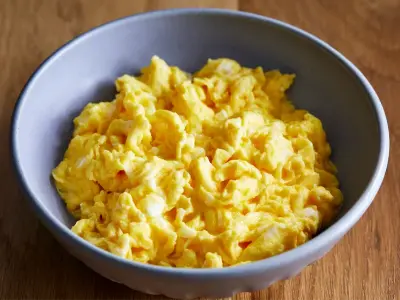

Scrambled Egg

egg
egg but scrambled
Ingredient
- 4 egg
- butter or olive oil
- salt and pepper
Instruction
- Crack eggs on a flat surface (helps ensure shells stay out of the mix) into a bowl that's deep enough for some serious whisking
- melt a teaspoon of butter or olive oil
- When the butter starts to bubble, or a drop of water added to the pan sizzles, slowly pour in the egg mixture
- Immediately reduce the heat to medium-low and as soon as the eggs begin to "set" or form a slightly solid base (a minute or two), gently stir with a rubber spatula
- Gently scrap the bottom of the pan, turning the eggs until almost all of the egg mixture has cooked through but there are still a few wet areas
- Remove the pan from the heat and continue to stir until the eggs finish cooking using only the residual heat from the pan. This helps prevent the eggs from overcooking. Serve immediately, ideally on plates that have been warmed in the oven.